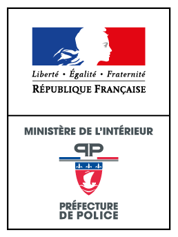

Présentation
Le Wiki de la Préfecture / Préfecture de Police LGP
À quoi sert ce wiki ?
Préfet, préfet de police, préfecture : ces mots reviennent sans cesse en jeu, mais leur sens exact reste flou pour beaucoup de joueurs. Ce wiki explique, étape par étape, qui décide de quoi, avec quels pouvoirs et sur quels textes.
Il s'adresse à toute personne dont le rôle touche à la Préfecture : agents, forces de l'ordre, secours, entreprises, citoyens. Les informations concernent Paris et l'agglomération du Grand Paname. Pour rejoindre nos services, consultez la page Nos emplois.
Trois notions à ne pas confondre
Le préfet
Représentant de l'État dans un département ou une région. Il fait appliquer les décisions du gouvernement et veille à l'ordre public.
La préfecture
L'ensemble des services de l'État placés sous l'autorité du préfet : accueil du public, titres, autorisations, coordination des services.
Le préfet de police
Autorité propre à Paris, chargée de l'ordre public, de la circulation et de la sécurité des personnes et des biens.
Comment lire ce wiki
- Chaque chapitre s'ouvre depuis le sommaire. Le bandeau et la photo restent affichés au-dessus.
- La mention « IRL comme IG » indique que le fonctionnement décrit est le même dans la réalité et en jeu. « Adapté LGP » signale une règle simplifiée pour le roleplay.
- Chaque chapitre se termine par les textes de référence (codes et articles) sur lesquels il s'appuie.
Les codes cités dans ce wiki
Contenu roleplay. Ce wiki sert de référence pour le jeu de rôle sur le serveur LGP. Il ne remplace aucun texte réglementaire réel. Les numéros d'articles sont donnés à titre indicatif : les textes évoluent, vérifiez-les toujours sur Légifrance.
Le préfet représente l'État sur un territoire, la préfecture est l'administration qui l'entoure, et le préfet de police est l'autorité spécifique de Paris pour l'ordre public. Les chapitres suivants détaillent leurs pouvoirs, un domaine après l'autre.
Textes de référence
- Décretn° 2004-374 du 29 avril 2004 — pouvoirs des préfets, organisation et action des services de l'État dans les régions et départements.
- Arrêtédu 12 messidor an VIII (1er juillet 1800) — création de la préfecture de police de Paris.
- CGCTart. L. 2512-13 et L. 2512-14 — répartition des pouvoirs de police à Paris entre le maire et le préfet de police.

IRL comme IG
Différence des Préfets / Préfet de Police
Le préfet (préfecture de département ou de région)
Le préfet est le représentant de l'État dans un département (ou une région). Il est nommé par le gouvernement et dépend du ministre de l'Intérieur.
Il a la charge des intérêts nationaux : contrôle de légalité des actes des collectivités, mise en œuvre des politiques publiques (économie, social, environnement…), ordre public et sécurité dans le cadre du droit commun.
Il coordonne les services de l'État et dirige l'action de la police et de la gendarmerie en matière d'ordre public et de police administrative. Ces forces restent toutefois rattachées, pour leur gestion interne, à la Police nationale ou à la Gendarmerie nationale.
Le préfet de police (Préfecture de Police)
C'est une fonction exceptionnelle, essentiellement parisienne. Le préfet de police exerce la police administrative générale à Paris et, pour une grande partie de ses missions, dans la petite couronne (Hauts-de-Seine, Seine-Saint-Denis, Val-de-Marne).
Il dirige directement les services de police de Paris, commande la Brigade de sapeurs-pompiers de Paris (BSPP) et est préfet de la zone de défense et de sécurité de Paris.
Il détient aussi des compétences administratives importantes : délivrance de nombreux titres (séjour, permis de conduire, immatriculation…) qui, ailleurs, relèvent de la préfecture de département.
Comparatif
| Critère | Préfet | Préfet de police |
|---|---|---|
| Territoire | Un département ou une région. | Paris, avec des compétences étendues à la petite couronne. |
| Police administrative | Ordre public et réglementation sur son territoire. | Ordre public, circulation, sécurité des personnes et des biens à Paris. |
| Forces de l'ordre | Coordonne la police et la gendarmerie présentes. | Dirige directement les services de police parisiens. |
| Secours | Prend la direction des secours en cas de crise majeure (ORSEC). | Commande la BSPP et dirige les secours à Paris. |
| Défense et sécurité | Préfet de zone seulement dans certains chefs-lieux de zone. | Préfet de la zone de défense et de sécurité de Paris. |
| Rattachement | Ministre de l'Intérieur. | Ministre de l'Intérieur. |
Pourquoi cette différence ?
Paris est la capitale : s'y concentrent les institutions, les manifestations, les grands événements et les risques. Dès 1800, un arrêté des consuls a donc confié la police de la ville à un magistrat spécialisé, le préfet de police, distinct du préfet qui gère l'administration générale du département.
Le préfet de police dispose, à la différence d'un préfet classique, d'un pouvoir hiérarchique direct sur les forces de police de la capitale et d'un commandement sur les sapeurs-pompiers de Paris. Un préfet classique, lui, coordonne des forces qui gardent leur propre chaîne de commandement.
Textes de référence
- Arrêtédu 12 messidor an VIII — institution du préfet de police et de ses attributions.
- CGCTart. L. 2512-13 et L. 2512-14 — pouvoirs de police à Paris : maire et préfet de police.
- Décretn° 2004-374 du 29 avril 2004 — pouvoirs des préfets et organisation des services de l'État.
IRL comme IG
Rôle du préfet sur les forces de sécurité intérieure
Une mission de l'État
La sécurité est un droit fondamental : l'État a le devoir de l'assurer sur tout le territoire, en veillant au respect des lois, au maintien de la paix et de l'ordre publics et à la protection des personnes et des biens. Le préfet en est le garant local.
Les forces de sécurité intérieure
Il s'agit principalement de la Police nationale et de la Gendarmerie nationale, deux forces d'État placées sous l'autorité du ministre de l'Intérieur. Elles sont appuyées, dans les communes qui en disposent, par les polices municipales, qui relèvent du maire.
Ce que le préfet fait concrètement
Prévenir
Anticiper les risques : événements, rassemblements, périodes sensibles. C'est le cœur de la police administrative.
Coordonner
Faire travailler ensemble police, gendarmerie et services partenaires, sans mélanger leurs chaînes de commandement.
Arbitrer
Décider de la répartition des moyens lorsque plusieurs besoins se présentent en même temps.
Rendre compte
Informer le ministre de l'Intérieur de la situation locale et des décisions prises.
Police administrative et police judiciaire
| Critère | Police administrative | Police judiciaire |
|---|---|---|
| Objectif | Prévenir les troubles à l'ordre public. | Constater les infractions et en rechercher les auteurs. |
| Moment | Avant l'infraction. | Après l'infraction. |
| Autorité | Préfet (et maire dans sa commune). | Procureur de la République et juges. |
| Exemples | Interdire une manifestation, établir un périmètre de sécurité. | Enquête, garde à vue, perquisition. |
Le pouvoir de substitution
Le maire est responsable de l'ordre public dans sa commune. Si une situation dépasse ses moyens, ou si le maire n'agit pas alors que l'ordre public est menacé, le préfet peut se substituer à lui et, en cas d'urgence, réquisitionner les moyens nécessaires.
Limite importante : le préfet n'est pas un enquêteur. Il ne dirige pas les enquêtes judiciaires, qui relèvent du procureur et des juges. Ses décisions restent soumises au contrôle du juge administratif (légalité, proportionnalité).
Le préfet est responsable de l'ordre public sur son territoire : il fixe les objectifs, coordonne police et gendarmerie et arbitre les moyens. Il agit en police administrative (prévenir) ; la police judiciaire (enquêter) dépend de la justice.
Textes de référence
- CSIart. L. 111-1 — la sécurité est un droit fondamental ; devoir de l'État de l'assurer.
- CGCTart. L. 2212-2 — pouvoirs de police du maire (bon ordre, sûreté, sécurité et salubrité publiques).
- CGCTart. L. 2215-1 — pouvoirs de police du préfet : substitution au maire, réquisitions en cas d'urgence.
- CPPart. 12 et 14 — la police judiciaire est exercée sous la direction du procureur de la République.
- Décretn° 2004-374, art. 5 — responsabilité du préfet pour la sécurité intérieure, civile et économique.
IRL comme IG
Pouvoirs précis du préfet sur la police nationale
Le principe
Sur son territoire, le préfet dispose de la Police nationale pour assurer l'ordre public. Il décide où et pourquoi les unités sont engagées ; le comment reste du ressort de leur commandement. À Paris, le préfet de police dirige directement les services de police.
Ce que le préfet peut faire
- Fixer les missions et les priorités des services de police (zones sensibles, périodes, types de délinquance).
- Engager des unités selon la situation : CRS, BAC, brigade motorisée…
- Établir un périmètre de protection autour d'un lieu ou d'un événement exposé à un risque d'acte de terrorisme, avec contrôles d'accès.
- Interdire une manifestation qui menace l'ordre public, ou en encadrer le parcours.
- Ordonner la fermeture temporaire d'un lieu lorsque sa fréquentation présente un danger pour l'ordre public.
- Réglementer la circulation : déviations, interdictions de stationner, accès restreints.
- Demander des renforts lorsque les moyens locaux ne suffisent pas.
Qui commande quoi
| Service | Mission | Lien avec le préfet |
|---|---|---|
| Police nationale | Sécurité du quotidien, patrouilles, interventions. | Le préfet fixe les priorités ; le commandement reste policier. |
| BAC | Interventions ciblées contre la délinquance. | Engagée selon les objectifs fixés par la hiérarchie, en appui des priorités du préfet. |
| CRS | Maintien de l'ordre, grands rassemblements, sécurisation. | Mises à la disposition du préfet pour le maintien de l'ordre. |
| Brigade motorisée | Circulation et sécurité routière. | Applique les mesures de circulation décidées (déviations, restrictions). |
| Police judiciaire | Enquêtes et affaires complexes. | Agit sous la direction de la justice, pas du préfet. |
| Accueil des citoyens | Guichet des démarches et demandes d'information. | Service de la préfecture, sous l'autorité du préfet. |
Maintien de l'ordre
Lors d'un attroupement, c'est l'autorité civile (préfet ou son représentant) qui décide d'employer la force publique. Les forces de l'ordre procèdent à des sommations avant de disperser un attroupement, puis n'emploient la force que de façon proportionnée.
Ce que le préfet ne peut pas faire : intervenir dans une enquête judiciaire en cours, ni ordonner d'arrêter ou de classer une procédure. Ces décisions appartiennent à la justice.
Le préfet fixe les objectifs, engage les unités, prend les arrêtés d'ordre public (manifestations, périmètres, fermetures) et demande des renforts. Il ne commande pas le détail des interventions et n'a aucun pouvoir sur les enquêtes judiciaires.
Textes de référence
- CSIart. L. 211-1 — manifestations sur la voie publique : déclaration préalable.
- CSIart. L. 211-4 — interdiction d'une manifestation par l'autorité de police.
- CSIart. L. 211-9 — emploi de la force pour disperser un attroupement, après sommations.
- CSIart. L. 226-1 — périmètres de protection décidés par le préfet.
- CSIart. L. 227-1 — fermeture de lieux dans le cadre de la lutte contre le terrorisme.
- CPart. 431-3 — définition de l'attroupement.
IRL comme IG
Pouvoirs du préfet sur la Gendarmerie nationale
Un statut particulier
La Gendarmerie nationale est une force armée à statut militaire, chargée de veiller à la sûreté publique et d'assurer le maintien de l'ordre et l'exécution des lois. Depuis la loi du 3 août 2009, elle est rattachée au ministère de l'Intérieur, comme la Police nationale, tout en gardant son statut militaire.
Autorité d'emploi et autorité organique
Le préfet décide de l'emploi
Il donne les objectifs et les missions à remplir en matière d'ordre public : sécurisation, maintien de l'ordre, renforts.
La hiérarchie garde le commandement
L'organisation interne, la discipline, la formation et la logistique restent gérées par le commandement de la gendarmerie.
Les missions
- Sécurité publique, surtout en zones rurales et périurbaines.
- Police judiciaire : enquêtes sous la direction du procureur.
- Maintien de l'ordre par la gendarmerie mobile, équivalente aux CRS pour la police.
- Missions particulières : sécurité des institutions et cérémonial (Garde républicaine), transports aériens, etc.
Ce que le préfet peut demander
- Engager des unités de gendarmerie territoriales ou mobiles pour un événement ou une crise.
- Fixer des objectifs de sécurité publique pour le département, en lien avec le commandant de groupement.
- Coordonner l'action de la gendarmerie avec celle de la police pour éviter les doublons.
En pratique : le préfet transmet une demande ou un ordre d'emploi à l'officier de gendarmerie responsable, qui choisit les moyens pour l'exécuter. Il ne donne pas d'ordres directs aux gendarmes sur le terrain.
Le préfet dispose de la gendarmerie comme de la police pour l'ordre public : il fixe les objectifs et décide de l'emploi des unités. Le commandement, la discipline et l'organisation restent militaires et relèvent de la hiérarchie de la gendarmerie.
Textes de référence
- Loin° 2009-971 du 3 août 2009 — loi relative à la gendarmerie nationale (rattachement au ministère de l'Intérieur).
- CSIart. L. 421-1 — la gendarmerie nationale est une force armée instituée pour veiller à la sûreté publique et assurer le maintien de l'ordre.
- CPPart. 12 et 14 — police judiciaire exercée sous la direction du procureur de la République.
IRL comme IG
Rôle du préfet sur les secours (sécurité civile)
Qui dirige les secours ?
En temps normal, la direction des opérations de secours (DOS) revient au maire sur sa commune. Lorsque l'événement dépasse les limites de la commune ou ses moyens, ou que le dispositif ORSEC est déclenché, le préfet devient directeur des opérations de secours.
Le dispositif ORSEC
L'organisation de la réponse de sécurité civile (ORSEC) recense les moyens publics et privés et prévoit comment les mobiliser. Elle comprend des dispositions générales, valables pour tout événement, et des dispositions spécifiques à certains risques (inondation, accident industriel, attentat, etc.). Les communes préparent de leur côté un plan communal de sauvegarde.
DOS et COS : qui fait quoi ?
Le préfet (DOS)
Dirige l'ensemble de la réponse : décisions stratégiques, mobilisation des moyens, protection et information de la population.
Le commandant des opérations de secours (COS)
Un officier des sapeurs-pompiers commande les équipes sur le terrain, sous l'autorité du DOS.
Les services partenaires
Pompiers, urgences médicales, police, gendarmerie et associations agréées de sécurité civile.
Déroulement d'une crise
- AlerteLes secours sont prévenus et engagent leurs premiers moyens.
- ÉvaluationL'ampleur de l'événement est estimée : victimes, zone concernée, risques.
- DéclenchementLe préfet active ORSEC et ouvre une cellule de crise (centre opérationnel).
- Direction des opérationsLe préfet coordonne ; le COS agit sur le terrain.
- Retour à la normaleFin de l'alerte, bilan et information du public.
Les pouvoirs de crise
- Réquisition de tout bien ou service nécessaire (véhicules, locaux, entreprises), avec indemnisation.
- Mesures de protection : évacuation, confinement, interdiction de zones.
- Renforts demandés au préfet de zone lorsque les capacités du département sont dépassées.
À Paris
Le préfet de police est l'autorité de référence. Il commande la Brigade de sapeurs-pompiers de Paris (unité militaire) et dispose d'un centre opérationnel pour suivre en direct les événements de la capitale.
Le préfet prend la direction des secours quand un événement dépasse la commune ou déclenche ORSEC. Il décide et coordonne ; le commandant des opérations de secours, un sapeur-pompier, commande l'action sur le terrain.
Textes de référence
- CSIart. L. 741-1 et L. 741-2 — organisation de la réponse de sécurité civile (ORSEC) : dispositions générales et spécifiques.
- CSIart. L. 742-2 — le préfet directeur des opérations de secours.
- CSIart. L. 731-3 — plan communal de sauvegarde.
- CGCTart. L. 1424-4 — le commandant des opérations de secours agit sous l'autorité du DOS.
- CGCTart. R. 1424-43 — le COS relève en principe du directeur départemental des services d'incendie et de secours.
- CGCTart. L. 2215-1 — pouvoirs de police et de réquisition du préfet en situation de crise.
IRL comme IG
Rôle du préfet vis-à-vis des entreprises privées
Le principe : liberté d'entreprendre
Les entreprises sont libres d'exercer leur activité. Le préfet n'intervient que pour protéger l'ordre public, la sécurité et la santé des personnes. Il peut autoriser, contrôler et, si nécessaire, sanctionner, mais toujours pour un motif précis et proportionné.
Les domaines d'intervention
Sécurité privée
Les sociétés et agents de sécurité sont encadrés par un organisme de contrôle ; le préfet impose des dispositifs de sécurité pour les événements à risque.
Commerces et débits de boissons
Horaires, troubles à l'ordre public, bruit : le préfet peut ordonner une fermeture administrative.
Établissements ouverts au public
Respect des règles de sécurité incendie et de capacité d'accueil, contrôlé par la commission de sécurité.
Événements
Déclaration ou autorisation préalable des manifestations et événements importants, avec service d'ordre à la charge de l'organisateur si nécessaire.
Les mesures possibles, de la plus légère à la plus lourde
- Avertissement ou rappel à la règleLe service concerné prévient l'entreprise du manquement constaté.
- Mise en demeureUn délai est donné pour se mettre en conformité.
- Fermeture administrative temporaireDécidée par arrêté, pour une durée limitée, en cas d'atteinte à l'ordre public, à la santé ou à la sécurité.
- PoursuitesTransmission au procureur si une infraction pénale est constatée.
Pour les joueurs : une entreprise qui pose problème est d'abord avertie. La fermeture administrative reste une mesure de dernier recours, et l'entreprise peut la contester devant le tribunal administratif.
Le préfet ne dirige pas les entreprises : il contrôle ce qui touche à l'ordre public, à la sécurité et à la santé (sécurité privée, débits de boissons, établissements recevant du public, événements) et peut aller jusqu'à la fermeture administrative.
Textes de référence
- CSILivre VI (art. L. 611-1 et suivants) — activités privées de sécurité.
- CSIart. L. 211-1 et L. 211-4 — déclaration et interdiction des manifestations.
- CSIart. L. 211-11 — service d'ordre à la charge des organisateurs de certaines manifestations.
- CSPart. L. 3332-15 — fermeture administrative d'un débit de boissons ou d'un restaurant.
- CCHart. R. 123-1 et suivants — établissements recevant du public : sécurité incendie et accessibilité.
- CTart. L. 8272-2 — fermeture administrative en cas de travail illégal (voir chapitre 09).
Adapté LGP
Régularisation administrative
De quoi parle-t-on ?
La régularisation administrative consiste à remettre en règle une situation qui ne respecte pas, ou plus, les règles : titre ou document manquant ou expiré, activité exercée sans autorisation, déclaration oubliée. Le terme est surtout connu pour le séjour des étrangers, mais il s'applique à toute démarche auprès de la Préfecture.
Le cas du séjour des étrangers
Le préfet délivre les titres de séjour. Une personne en situation irrégulière peut demander une admission exceptionnelle au séjour : le préfet examine le dossier au cas par cas, en tenant compte de motifs humanitaires ou exceptionnels. Sont généralement regardés l'ancienneté de la présence, la vie privée et familiale, l'insertion et l'activité professionnelle.
Le préfet dispose d'un pouvoir d'appréciation : remplir les critères n'ouvre pas un droit automatique à la régularisation.
Les autres régularisations
- Documents et titres : renouvellement d'un titre expiré, mise à jour d'une situation (changement de nom, d'adresse).
- Activités et entreprises : déclaration ou autorisation manquante, mise en conformité d'un établissement.
- Dossiers incomplets : la Préfecture demande les pièces manquantes avant de statuer.
Procédure type
- ConstatUn agent relève l'irrégularité lors d'un contrôle ou d'une démarche.
- Notification et délaiLa personne ou l'entreprise est informée et dispose d'un délai pour agir.
- Dépôt du dossierLe dossier complet est déposé via les démarches en ligne.
- InstructionLa Préfecture vérifie les pièces et peut demander des compléments.
- DécisionSituation régularisée, refus motivé, ou sanction si le délai n'a pas été respecté.
Si la demande est refusée
Le demandeur peut présenter un recours gracieux (auprès du préfet) ou un recours devant le tribunal administratif, en principe dans un délai de deux mois à compter de la décision.
Attention : sans régularisation dans les délais, la Préfecture peut prononcer une amende, retirer une autorisation ou ordonner une fermeture administrative. Sur LGP, la procédure est simplifiée : voir les démarches en ligne ou contactez la Préfecture.
Régulariser, c'est remettre un dossier en conformité. Le préfet apprécie chaque demande, peut la refuser de façon motivée, et un refus peut être contesté dans un délai de deux mois.
Textes de référence
- CESEDAart. L. 435-1 — admission exceptionnelle au séjour (motifs humanitaires ou exceptionnels).
- CJAart. R. 421-1 — délai de deux mois pour contester une décision devant le juge administratif.
- CTart. L. 8272-2 — fermeture administrative en cas de travail illégal.
IRL comme IG
Inspection du travail
Qui est l'inspection du travail ?
C'est un service de l'État placé sous l'autorité du ministère chargé du Travail, et non du préfet. Elle veille au respect des règles qui protègent les salariés : conditions de travail, santé et sécurité, durée du travail, déclaration des employés, lutte contre le travail dissimulé.
Ses trois missions
Contrôler
Visites en entreprise, vérification des registres, des contrats et des conditions de travail.
Conseiller
Informer employeurs et salariés sur leurs droits et leurs obligations.
Sanctionner
Mise en demeure, procès-verbal, transmission au procureur si une infraction est constatée.
Les pouvoirs des agents de contrôle
- Entrer librement dans les établissements pendant les heures de travail, sans prévenir.
- Se faire présenter les documents obligatoires (registre du personnel, contrats, bulletins de paie).
- Mettre en demeure l'employeur de corriger un manquement en matière de santé et de sécurité.
- Dresser un procès-verbal lorsqu'une infraction est constatée.
Travail illégal et fermeture administrative
Le travail illégal regroupe notamment le travail dissimulé (employer quelqu'un sans le déclarer). En cas de constat, le préfet peut ordonner la fermeture administrative provisoire de l'établissement, pour une durée limitée. Les services de l'État (inspection du travail, police, gendarmerie, fiscalité, protection sociale) coordonnent leurs contrôles dans des comités placés sous l'autorité du préfet et du procureur.
Lien avec la Préfecture : l'inspection du travail constate et propose ; le préfet décide de la fermeture administrative lorsque la loi le prévoit. Les deux travaillent ensemble mais restent indépendants.
L'inspection du travail contrôle le respect du droit du travail et dépend du ministère du Travail. Quand du travail illégal est constaté, le préfet peut décider une fermeture administrative temporaire de l'établissement.
Textes de référence
- CTart. L. 8112-1 — agents de contrôle de l'inspection du travail.
- CTart. L. 8113-1 — droit d'entrée dans les établissements.
- CTart. L. 8113-7 — constatation des infractions par procès-verbal.
- CTart. L. 4721-1 — mise en demeure en matière de santé et de sécurité.
- CTart. L. 8211-1 et L. 8221-1 — travail illégal et travail dissimulé.
- CTart. L. 8272-2 — fermeture administrative provisoire décidée par le préfet.
IRL comme IG
Huissier de justice
Qui est l'huissier de justice ?
L'huissier de justice est un officier public et ministériel. Il signifie les actes (assignations, jugements), dresse des constats, recouvre des créances et fait exécuter les décisions de justice (saisies, expulsions). Il n'est pas un agent de la Préfecture, mais il a parfois besoin de son appui.
Bon à savoir : dans la réalité, la profession d'huissier de justice a été regroupée depuis le 1er juillet 2022 sous le nom de « commissaire de justice ». Sur LGP, le terme « huissier » reste utilisé.
Le concours de la force publique
L'État est tenu de prêter son concours à l'exécution des décisions de justice. Lorsque l'exécution se heurte à un refus (une expulsion, par exemple), l'huissier demande au préfet (au préfet de police à Paris) l'appui de la police ou de la gendarmerie.
- Décision de justiceUn jugement ou un titre exécutoire est rendu. Sans lui, aucune expulsion n'est possible.
- Commandement de quitter les lieuxL'huissier notifie la décision à la personne concernée. Pour un lieu habité, un délai de deux mois s'applique en principe.
- Demande de concoursEn cas de refus de partir, l'huissier saisit le préfet.
- Décision du préfetLe préfet répond dans un délai de deux mois ; un refus doit être motivé et le silence vaut refus. Il tient compte de l'ordre public et de la situation des occupants.
- Exécution ou indemnisationSi le concours est accordé, l'expulsion a lieu avec les forces de l'ordre. S'il est refusé, l'État peut devoir indemniser le propriétaire.
La trêve hivernale
Du 1er novembre au 31 mars, les expulsions de logements habités sont en principe suspendues, sauf exceptions prévues par la loi.
L'huissier exécute les décisions de justice. Quand il lui faut la force publique, c'est le préfet qui accorde ou refuse son concours, par une décision motivée, en pesant l'ordre public et les conséquences pour les personnes.
Textes de référence
- Ord.n° 2016-728 du 2 juin 2016 — statut du commissaire de justice (fusion des huissiers et des commissaires-priseurs).
- CPCEart. L. 153-1 — l'État est tenu de prêter son concours à l'exécution des décisions de justice.
- CPCEart. R. 153-1 — demande de concours au préfet : réponse sous deux mois, refus motivé.
- CPCEart. R. 154-1 — point de départ de la responsabilité de l'État en cas de refus.
- CPCEart. L. 411-1 et L. 412-1 — expulsion, commandement de quitter les lieux et délai de deux mois.
- CPCEart. L. 412-6 — sursis à l'expulsion pendant la trêve hivernale.
IRL comme IG
Vigipirate
Qu'est-ce que Vigipirate ?
Vigipirate est le plan gouvernemental de vigilance, de prévention et de protection face à la menace terroriste. Il relève du Premier ministre : les services de renseignement évaluent la menace, et le Secrétariat général de la défense et de la sécurité nationale (SGDSN) en déduit la posture de sécurité à adopter.
Le plan compte environ 300 mesures : des mesures permanentes, réparties en grands domaines d'activité (transports, santé, etc.), et des mesures complémentaires activées selon la menace. Une partie d'entre elles est classifiée.
Les trois niveaux
 Niveau 1
Niveau 1
Vigipirate
Posture permanente de vigilance.
- Mesures permanentes toujours actives.
- Présence visible des forces de l'ordre dans les lieux sensibles.
- Sensibilisation du public et des opérateurs.
Vigipirate : Sécurité renforcée — Risque attentat
Menace élevée, voire très élevée.
- Mesures particulières ajoutées selon les secteurs : aéroports, gares, lieux de culte…
- Contrôles d'accès et de sacs renforcés, patrouilles supplémentaires.
- Peut s'appliquer à l'ensemble du territoire.
Vigipirate : Urgence attentat
Après un attentat, ou lorsqu'un groupe terroriste identifié mais non localisé passe à l'action.
- Limité à la durée de la gestion de crise.
- Moyens exceptionnels mobilisés.
- Diffusion de consignes de protection à la population.
Rôle du préfet
- Appliquer localement les mesures décidées au niveau national.
- Adapter les dispositifs aux lieux et événements de son territoire (gares, grands rassemblements, lieux de culte).
- Prendre des arrêtés : périmètres de protection, restrictions de circulation, fermetures de lieux.
- Coordonner police, gendarmerie, secours et opérateurs concernés.
- Informer la population des consignes à suivre.
Sur LGP : le niveau en vigueur est annoncé par la Préfecture. Suivez les actualités pour connaître les consignes en cours. Le wiki conserve les noms historiques des niveaux ; selon le site officiel info.gouv.fr, la communication récente du plan parle de « vigilance », « vigilance renforcée » et « alerte attentat ».
Vigipirate adapte la protection du pays à la menace terroriste selon trois niveaux. Le gouvernement fixe le niveau ; le préfet le décline sur son territoire : arrêtés, contrôles, coordination des forces et information du public.
Textes de référence
- CDéfart. L. 1111-1 — stratégie de sécurité nationale.
- CDéfart. L. 1332-1 à L. 1332-7 — protection des opérateurs et des secteurs d'activités d'importance vitale.
- CSIart. L. 226-1 — périmètres de protection décidés par le préfet.
- IGIn° 6600 — instruction générale interministérielle sur la protection des activités d'importance vitale.
Une question sur le contenu de ce wiki ou sur une procédure ? L'équipe de la Préfecture peut vous répondre.
Contactez la Préfecture